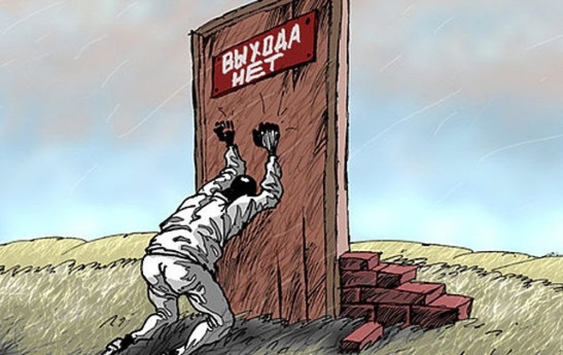

Регистрация в телеграм-боте
Вернуться в раздел "Статьи участников МММ"
Из беседы в нашем телеграм-чате (орфография и пунктуация сохранены)
«Для торжества зла необходимо только одно условие,
чтобы хорошие люди сидели сложа руки.» Э.Бёрк
"Борец с МММ": если бы это была такая хорошая легальная финансовая система которая лучше банков то её бы использовали. Банк "обворовывает" народ если это так можно сказать. Но так надо ибо откуда будут возникать малые бизнесы, как человек купит себе машину и т. д. Накопить на это не возможно так устроено что хватит зарплаты только на удивление потребностей. Откладывать можно но это займёт всю жизнь. Кредит это очень хороший финансовый инструмент если уметь им пользоваться
Участник МММ: То есть , ссудный процент - это очень хорошо, по-Вашему? Легально - значит "правильно"? Или не верно Вас понимаю? Ну вот по - Вашим словам невозможно откладывать. И кроме легальных кредитов, которые потом отдавать кровососам надо, способов жить нет.Ну и что делать тогда? Смириться чтоль?
"Борец с МММ": Да смириться. Так и есть. Называйте их как хотите но таков капитализм. Мир не справедлив что поделать. Не ну ты можешь достичь успеха и купить машину не в кредит но этот путь ещё сложнее чем оплачивать кредит

В данном случае "борец с МММ", судя по его риторике, весьма молод. Но сегодня так рассуждают очень и очень многие люди. Чего стоят только одни комменты на нашем ютуб-канале.
"Мир несправедлив, что поделать" — это для вас он несправедлив, ибо такие, как вы, ничего и не делают, чтобы он стал для вас справедлив. Соответственно, делают и добиваются результатов другие. Вакуум быстро заполняется. В этом, кстати говоря, и заключается настоящая справедливость этого мира.
У этого Вашего состояния есть совершенно ясное определение: выученная беспомощность.
Таких, как Вы, буквально научили быть беспомощными (угадаете кто?). И этой беспомощностью Вы пытаетесь заразить других.
Зомби! Мёртвые при жизни, кусающие других и заражающие смертью. При жизни. По-моему, прекрасная аллегория.
У Кастанеды есть замечательная цитата, моя любимая, рабочий принцип:
«Мы делаем себя жалкими. Мы делаем себя сильными. В обоих случаях мы тратим одинаковое количество энергии».
Такие, как Вы, тратят свою энергию буквально на то, чтобы быть жалкими. Беспомощными! Эта Ваша риторика – "что поделать" – об этом прямо говорит. Вы смирились с тем, что Вы раб, который вынужден работать за деньги и брать кредиты. Для Вас это нечто естественное, само собой разумеющееся. Норма жизни.
В то время, как ничего естественного в этом нет!
Например, сегодняшним хозяевам денег, рабами которых мы все являемся, вовсе не нужно работать за деньги и уж тем более брать кредиты – они их просто печатают. Прямо сейчас. Создают из воздуха! И скупают на них всех и вся!.. Между прочим, за это право они очень долго бились, много чего делали, а не сидели сложа руки. Тратили свою энергию, чтобы доминировать, а не пресмыкаться.
Мы не согласны с этим положением вещей, поэтому предпринимаем простые посильные действия для исправления этой ситуации: буквально объединяем свои микрокапиталы и перераспределяем их между собой напрямую, минуя посредников-банкиров.
В основе МММ лежит тот же рабочий механизм, что и в банке, – денежный мультипликатор – только здесь нет посредника-банкира. Здесь, образно говоря, каждый участник и сам себе клиент, и сам себе банкир.
В МММ вся суперприбыль от работы денежного мультипликатора не идёт в лапы банкиру (все эти колоссальные премии топ-менеджерам и прочим Грефам), а перераспределяется между всеми участниками.
Также в МММ отсутствуют издержки, которые есть у банков: не нужно арендовывать/покупать и содержать офисы, не нужно платить зарплату многочисленному персоналу, нет дорогостоящего оборудования и его содержания (а Вы думали, из чьих, по сути, денег банки платят по этим издержкам?).
В МММ всё основано на самой эффективной Человеческой технологии – на доверии! А зачем обманывать таких же, как ты, людей, если, поступая по совести, ты будешь реально получать от 20% в месяц?!
Люди вступают в МММ ещё и по этой причине: Мы устали от бесконечного лицемерия, от всей этой тотальной лжи, которая завела мир в тупик. Мы все изголодались по простым Человеческим отношениям! На мой взгляд, по этой причине самые отъявленные (патологические просто!) лгуны и мошенники – все эти современные сми и чиновники-олигархи, которые их контролируют, – не могут поверить, что такое вообще возможно. Ещё бы! Они-то своих "высот" достигли исключительно ложью и манипуляциями: бесконечно обманывая и обворовывая своих же соотечественников.
Если сказать иначе, то проблема современной, так называемой «новой экономики», в том, что деньги являются универсальным товаром. Но право выпускать эти деньги есть лишь у малочисленной группы лиц: хозяева денег, банковский синдикат, ФРС – это и есть централизация (отсюда и «центральные банки»).
В этом и заключается вся несправедливость современного мироустройства! Ведь этим правом должны обладать все участники рынка: все дееспособные люди, участвующие в хозяйственной деятельности, должны участвовать в создании денег. Всё дело еще и в том, что современные технологии позволяют это сделать.
Перед Вами возрожденная МММ2.0. Первый этап на пути, чтобы добыть себе такое право. Мы прямо сейчас выстраиваем систему, в которой каждый дееспособный (производящий товар или услугу) гражданин буквально производит ещё и деньги. Просто делясь своими свободными деньгами с другими точно такими же, как и он, людьми. Это и есть децентрализованная эффективная и справедливая эмиссия денег. Это деньги будущего. Точнее, настоящего. И называются они Мавро.
Добро пожаловать в новый мир, который Мы создаем и в котором живём по-человечески прямо сейчас (а не "заживем к 2030 году", как это бесконечно обещают нам наши одарённые политики).
Вернуться в раздел "Статьи участников МММ"
Регистрация в телеграм-боте